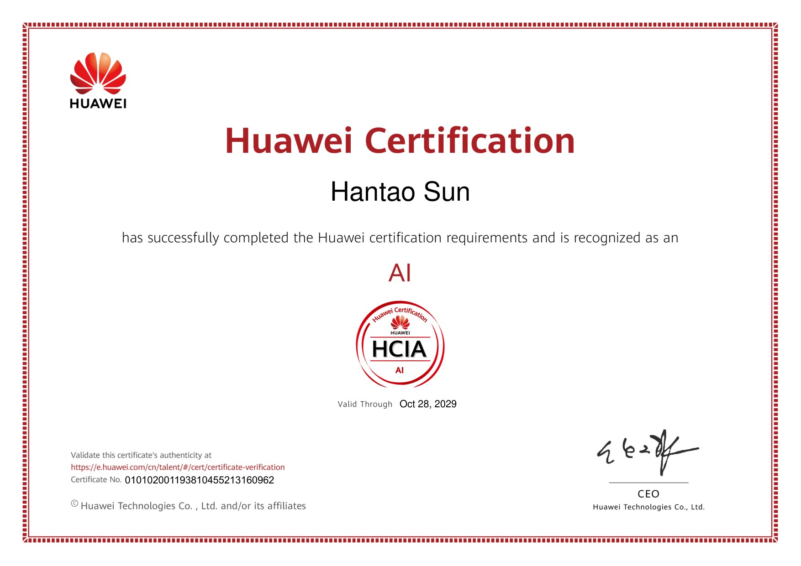
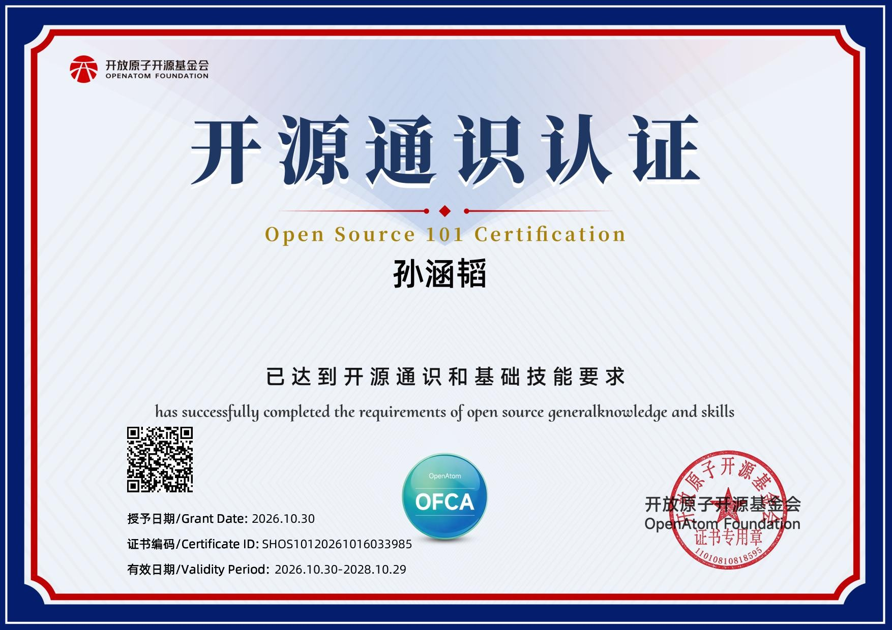

我是上海杉达学院数据科学与大数据技术专业的一名大三在读学生， 籍贯上海。在校期间，我的计算机与专业课程成绩优良，GPA 达到 3.2/4.0， 对数据结构、数据库、统计学与数据可视化都有扎实的掌握。
我熟练掌握 SQL、Python（Pandas / NumPy）、Excel 等数据处理工具， 能独立完成数据清洗、分析与可视化任务。202X 年暑假，我在新华三（H3C）完成了实习， 将课堂所学落地到真实的企业级环境中，提升了工程实践与团队协作能力。
我的求职方向是数据分析实习生，热爱用数据驱动决策，希望把专业知识应用到实际业务中， 在实践中持续提升自己的业务理解与数据分析能力。
数据科学与大数据技术 · 本科（大三在读）
GPA：3.2 / 4.0；专业课成绩均在 75 分以上。
核心课程：数据结构与算法、数据库原理、Python 程序设计、统计学基础、大数据导论、数据可视化。
掌握 SQL、Python（Pandas / NumPy）、Excel 等数据处理基础工具，具备扎实的数据分析基础。
ICT 技术售前认知实习（大二暑期，2026-07-20 至 2026-08-20）
查看实习证明（脱敏版，盖章） · 2026-08-27 开具
以下为我做过的部分项目（数据可在 assets/js/main.js 中自由增删）。
华为认证、开源通识认证，以及课程作业与实践作品。

